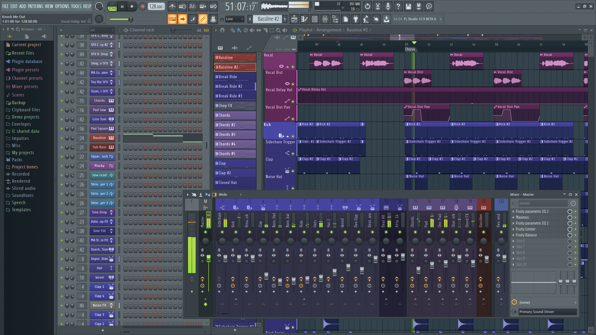

What is FL Studio?

FL Studio (previously known as FruityLoops before 2003)[4] is a digital audio workstation (DAW) developed by the Belgian company Image-Line. FL Studio features a graphical user interface with a pattern-based[5] music sequencer. The program is available in four different editions for Microsoft Windows and macOS.[6] Image-Line offers lifetime free updates to the program after one-time purchases, which means customers receive all future updates of the software for free after their purchase.[7][8] Image-Line also develops FL Studio Mobile for Android, iOS, macOS and Universal Windows Platform devices. [9]
FL Studio can also be used as a virtual studio technology (VST) instrument in other audio workstation programs and also functions as a ReWire client. Image-Line also offers its own VST instruments and audio applications. FL Studio has been used by numerous highly visible hip hop and EDM producers, including Porter Robinson, Madeon, Soulja Boy, Southside, Martin Garrix, Avicii, Imanbek and Deadmau5.[10][11]